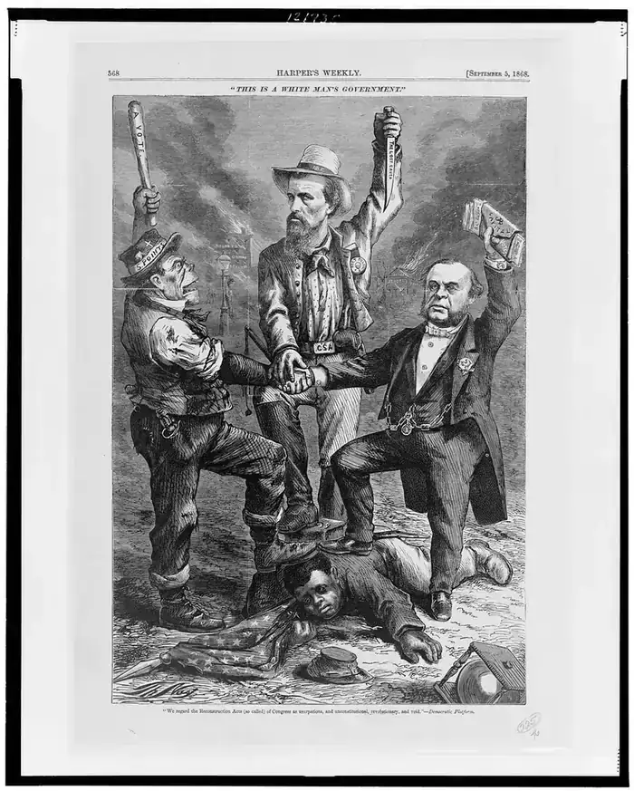
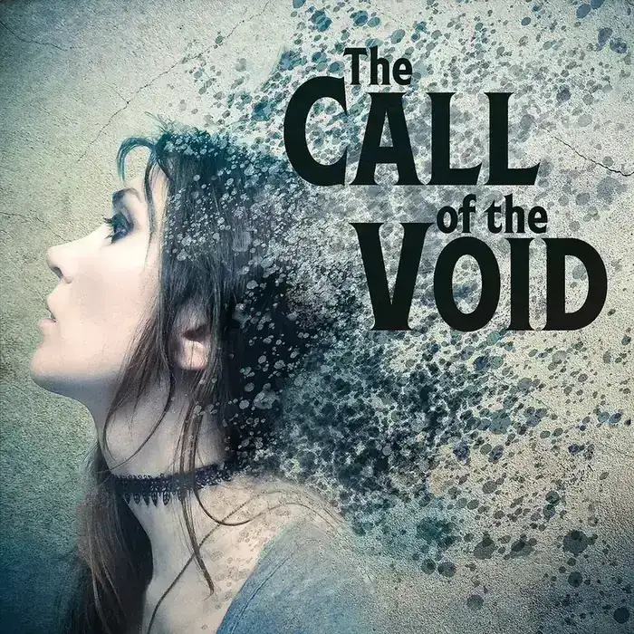

The phenomenon
The 'call of the void' — l'appel du vide in French — is the intrusive thought of jumping or swerving when near a height or a moving vehicle. Surveys find that a substantial minority, sometimes around half of respondents in student samples, report having experienced something like it, usually once or a few times, and usually without any wish to act.
Maps, diagrams and images




It is not a symptom of suicidal intent. The people who report it describe the thought as alien and unwelcome, and it appears in people with no history of self-harm.
What it appears to be
The leading account is that these are intrusive thoughts, which are near-universal, combined with a misinterpretation signal: the brain produces a safety-related impulse ('do not step closer') and the conscious mind experiences it as its opposite. Some work links the phenomenon to anxiety sensitivity — a heightened awareness of bodily signals — rather than to depression.
Documented: the experience is common, and distinct from suicidal ideation.
Documented: it is reported as intrusive and unwanted.
Supported: an association with anxiety sensitivity in the small literature available.
Not established: a precise mechanism, or a clinical threshold at which it becomes a symptom.
Why it matters: it is a clean example of a thought that is not a wish, which is a distinction a great deal of writing about the mind gets wrong.
Why it is in the archive
Because the archive spends most of its time on claims about the world, and this one is about the difference between a thought and an intention — the same difference that separates a fringe claim from a lie.
Open resources on this topic
- PapersOpen-access articles: DOAJ · PubMed Central · Internet Archive Scholar
- BooksPublic-domain and borrowable copies: Open Library · Project Gutenberg · Google Books · Internet Archive
Cite this page
Momin, S. (2026). The Call of the Void. The Larger World Archive. https://drsamonline.github.io/LARGE_GLOBE/call-of-the-void.htmlMomin, Sohil. “The Call of the Void.” The Larger World Archive, 2026, https://drsamonline.github.io/LARGE_GLOBE/call-of-the-void.html.Momin, Sohil. “The Call of the Void.” The Larger World Archive, 2026. https://drsamonline.github.io/LARGE_GLOBE/call-of-the-void.html.@misc{the2026call,
author = {Momin, Sohil},
title = {The Call of the Void},
year = {2026},
howpublished = {The Larger World Archive},
url = {https://drsamonline.github.io/LARGE_GLOBE/call-of-the-void.html},
note = {Last reviewed 20 November 2026}
}Last reviewed 20 November 2026 · Corrections policy · this page is not peer reviewed
Sources for this page
- Wikipedia, “Call of the void” — the phenomenon and the researchen.wikipedia.org
- Wikipedia, “Intrusive thought” — the family it belongs toen.wikipedia.org
- Wikipedia, “Anxiety sensitivity” — the trait it correlates withen.wikipedia.org
- Wikipedia, “Suicidal ideation” — what it is noten.wikipedia.org